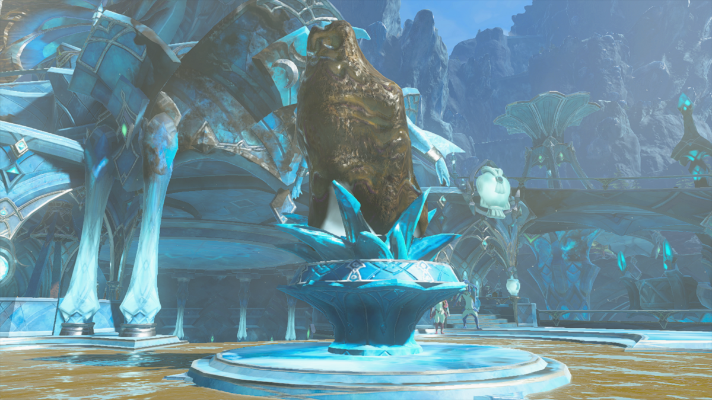

图：四个地区的异变——利特村、卓拉领地、鼓隆城、格鲁德小镇同时出事，四条线从这里分头展开。
先说结论：四条线，一座一座打
开完监视堡垒的鸟望塔、拿到滑翔伞，普尔亚把四地调查交给你：利特村、卓拉领地、鼓隆城、格鲁德小镇同时出事，每条线都是一座神殿加一位贤者。四条线没有固定顺序，可以先挑离得近、准备最足的去；四座神殿全部通关后，再回监视堡垒找普尔亚，总任务才算完成。
| 地区 | 异变 | 神殿与贤者 |
|---|---|---|
| 利特村（西北） | 暴风雪封村 | 风之神殿 · 丘栗 |
| 卓拉领地（东北） | 天上掉淤泥 | 水之神殿 · 希多 |
| 鼓隆城（东北火山） | 岩石烤肉 | 火之神殿 · 阿沅 |
| 格鲁德小镇（西南沙漠） | 沙暴与吉布多围城 | 雷之神殿 · 露珠 |
接取与奖励
| 项目 | 内容 |
|---|---|
| 接取 | 监视堡垒开鸟望塔、拿滑翔伞后，普尔亚交代 |
| 奖励 | 四位贤者陆续加入；四座神殿打通，每座神殿一只首领掉一个心之容器 |
| 后续 | 四座神殿全通后回监视堡垒找普尔亚 → 海拉鲁城堡的异变 |
出发前先备齐
四条线要的东西不一样，出门前按目的地备好，路上少折返。
| 地区 | 必备 | 为什么 |
|---|---|---|
| 利特村 | 耐寒料理或防寒装备 | 暴风雪里冻掉血；登天上风暴圈最好凑够 2 级耐寒 |
| 卓拉领地 | 泼水果 | 洗淤泥全靠它，路边多捡点 |
| 鼓隆城 | 防火装备或耐火料理 | 死亡火山一带烫掉血 |
| 格鲁德小镇 | 耐热料理 + 耐寒料理 | 沙漠白天热、夜里冷，只备一种不够 |
利特村：暴风雪
暴风雪把村子封了，食物快断了，村里孩子还在练风之神殿的歌。先找村长特巴，再去找飞走的丘栗，借他的风登上天空的风之神殿。详见第 5 篇《利特村的丘栗》。
卓拉领地：淤泥
天上掉下来的淤泥堵了水路，糊住了广场上的转潮石像，卓拉族连水都游不利索。路边多捡泼水果，扔淤泥上就能洗掉，先把石像清出来。详见第 7 篇《被淤泥埋没的石像》。

图：卓拉领地的转潮石像——糊满淤泥，泼水果扔上去就能洗掉。
鼓隆城：岩石烤肉
族人吃上了来路不明的岩石烤肉，个个神志不清；阿沅戴着面具到处推销岩石烤肉。跟到阿沅队本部（YunoboCo HQ）的洞窟里打一场，躲开他的冲撞、趁他撞墙眩晕时打，三次打碎面具。上死亡火山之前备好防火。详见第 12 篇《鼓隆城的阿沅》。

图：鼓隆城——岩石烤肉让族人神志不清，阿沅戴着面具推销，面具要跟到阿沅队本部打三次才碎。
格鲁德小镇：沙暴与吉布多
沙暴围城，吉布多在城外游荡，小镇只能闭门死守。先去卡拉卡拉集市参加防御战，再进小镇帮露珠守城。详见第 13 篇《格鲁德小镇的露珠》。

图：格鲁德小镇——沙暴围城，先去卡拉卡拉集市，再进小镇帮露珠守城。
先去哪一条
没有固定顺序。一般建议先利特村：最近，准备也最简单，顺路还能把西北边的图开了。也可以先去顺路的，或者先去手头材料最齐的那条。单座神殿打完不用特意回来，四座全通后再回监视堡垒。
四座神殿全通之后
四座神殿全通后，回监视堡垒找普尔亚汇报。普尔亚用望远镜看浮空城堡——这才是望远镜剧情出现的时候。接下来是海拉鲁城堡的异变（第 14 篇）。
容易翻车的地方
- 以为有推荐顺序就必须照着走——没有，四条线并行，想先去哪就去哪。
- 单座神殿打完就跑回监视堡垒——不用，四座全通后再回。
- 去格鲁德准备变装——不需要，像前作那样变装进镇是多余的。
- 利特村不备耐寒就往雪山走、鼓隆城不备防火就上火山、沙漠只备耐热——都会掉血，沙漠夜里还会冻掉血。
- 卓拉领地不捡泼水果——淤泥洗不掉，石像清不了。
一句话总结
四条线没有固定顺序，备好耐寒、泼水果、防火、耐热耐寒，分头打通四座神殿，再回监视堡垒找普尔亚。